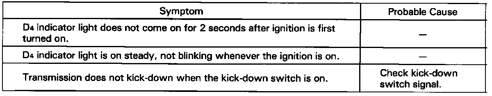

DTC List - Transmission Control
If the self-diagnosis D4 indicator light does not blink, perform an inspection according to the table listed below.

- If a customer describes the symptoms for codes 3, 6, 11 or 17, yet the D4 indicator light is not blinking, it will be necessary to recreate the symptom by test driving, and then checking the D4 indicator light with the ignition still ON.
- If the D4 indicator light displays codes 1, 2, 3, 7, 8, or 16, check first the No.31, 25, 5 and 22 fuse before electrical troubleshooting. If any of the fuses have blown, repair them and then recheck.
- If the D4 indicator light displays codes other than those listed above or stays lit continuously, the ECU is faulty.
- Sometimes the D4 indicator light and the Check Engine light may come on simultaneously. If so, check the PGM-FI system according to the number of blinks on the PGM-FI self-diagnosing indicator, then reset the memory by removing the No.15: ACG(s) fuse in the under dash fuse box for more than 10 seconds. Drive the vehicle for several minutes at speeds over 30mph (50 Km/h), then recheck the lights.